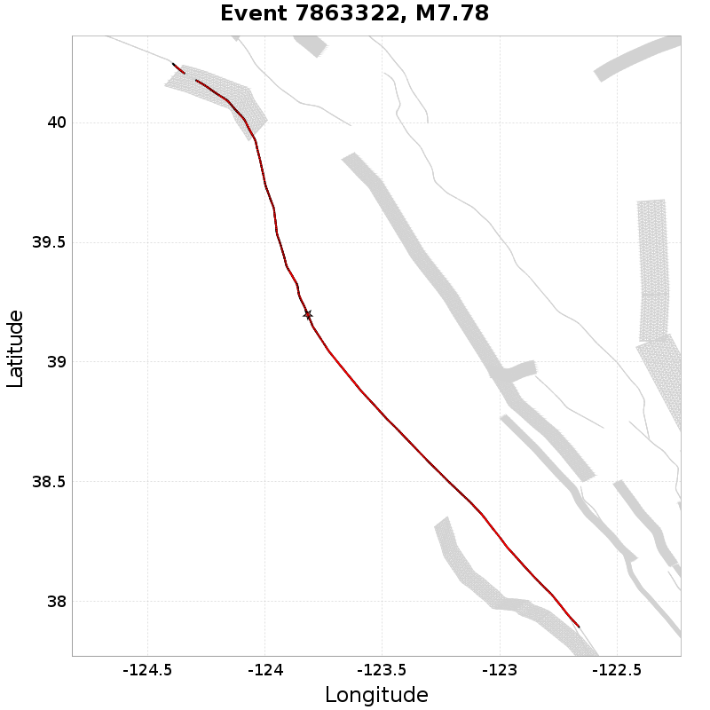
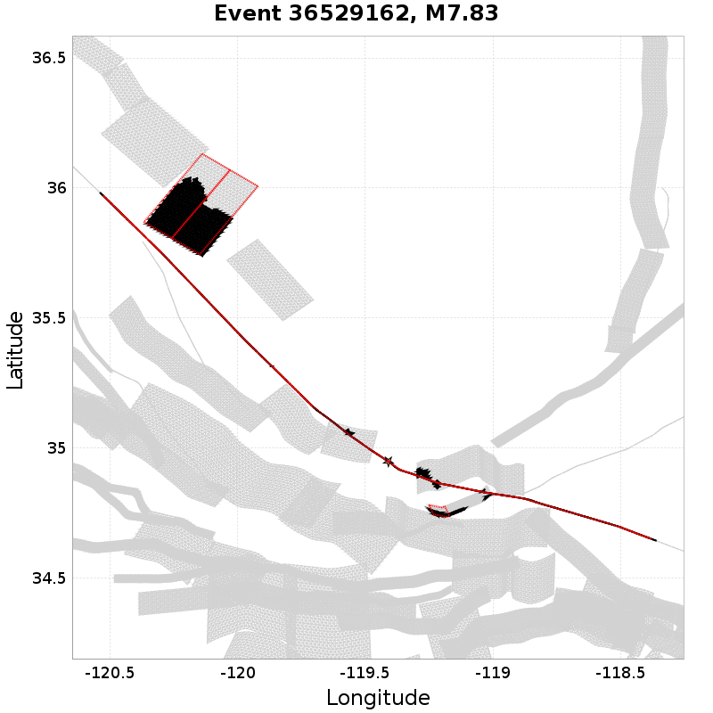
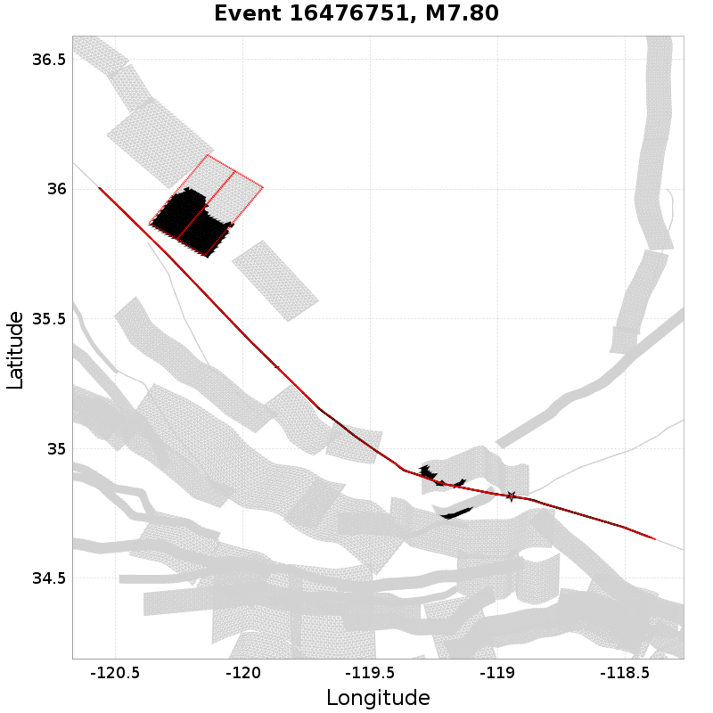
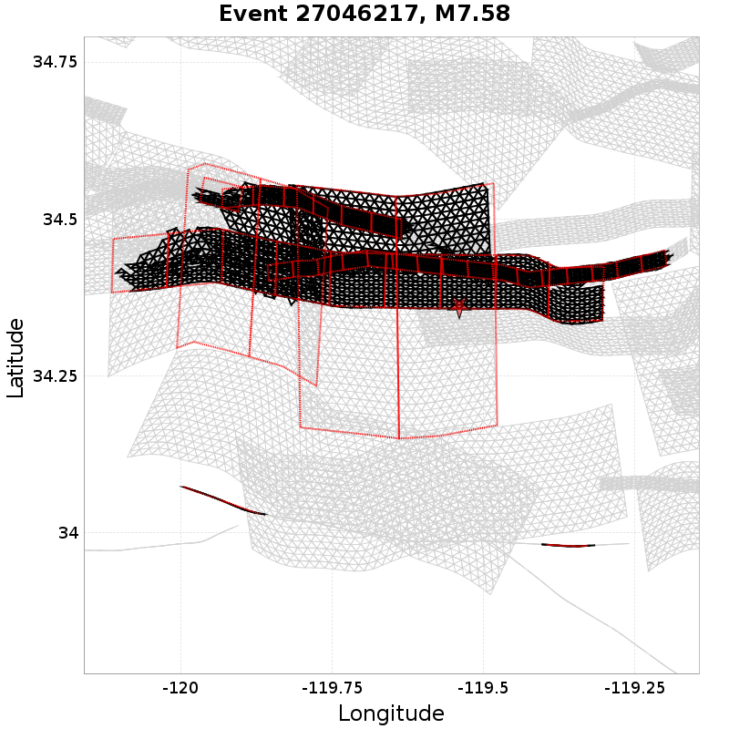
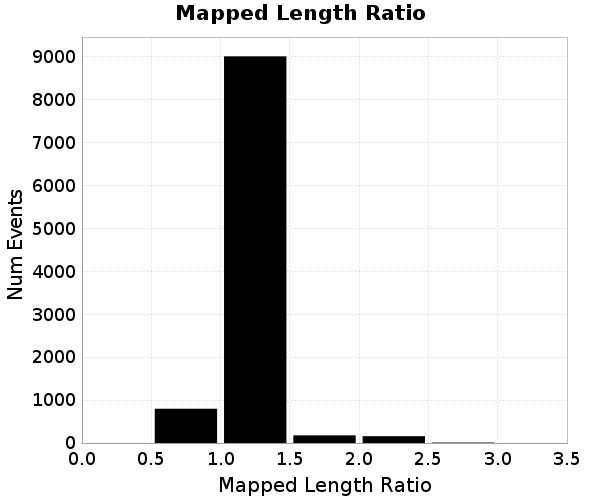
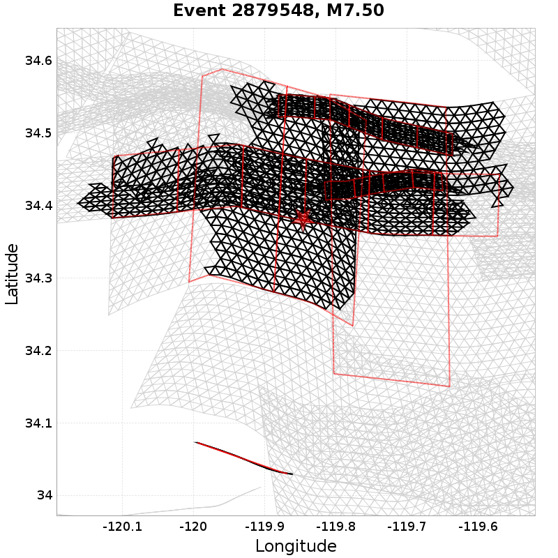

Subsections participates in a rupture if at least 20.0 % of its area ruptures
Total count of mapped UCERF3 subsections (e.g. SAF Mojave S Subsection 3), after application of minimum subsection area filter
| Event ID | Subsection Count | Plot |
|---|---|---|
| 5798783 | 56 (Subsection[s]) |  |
| 7863322 | 56 (Subsection[s]) |  |
| 31243115 | 50 (Subsection[s]) |  |
| 27745787 | 48 (Subsection[s]) | |
| 5441633 | 47 (Subsection[s]) |  |
Total count of mapped UCERF3 subsections (e.g. SAF Mojave S), after application of minimum subsection area filter

| Event ID | Parent Section Count | Plot |
|---|---|---|
| 36529162 | 8 (Section[s]) |  |
| 18109274 | 8 (Section[s]) |  |
| 16476751 | 7 (Section[s]) |  |
| 29149906 | 7 (Section[s]) | |
| 27046217 | 7 (Section[s]) |  |
Ratio of the total rupture length (UCERF3 mapped subsection rupture) to the idealized length, defined as the straight line distance between the furthest 2 subsections

| Event ID | Mapped Length Ratio | Plot |
|---|---|---|
| 5798783 | 56.43 | |
| 7863322 | 56.43 | |
| 31243115 | 50.39 | |
| 27745787 | 48.35 | |
| 6804744 | 47.35 |  |
Total rupture length (UCERF3 mapped subsection rupture) minus the idealized length, defined as the straight line distance between the furthest 2 subsections

| Event ID | Mapped Excess Length | Plot |
|---|---|---|
| 5798783 | 295.66 (km) | |
| 7863322 | 295.66 (km) | |
| 7380799 | 279.87 (km) |  |
| 36529162 | 276.58 (km) | |
| 16476751 | 275.26 (km) |
Moment of simulator elements not included in mapped UCERF3 subsection rupture

| Event ID | Moment Off Mapped Rupture | Plot |
|---|---|---|
| 2746711 | 1.0191426E19 (N-m) |  |
| 21862982 | 9.609209E18 (N-m) |  |
| 25821192 | 9.276064E18 (N-m) |  |
| 2879548 | 8.9270784E18 (N-m) |  |
| 6362198 | 6.9412928E18 (N-m) |
Event Moment Magnitude
| Event ID | Magnitude | Plot |
|---|---|---|
| 21862982 | 7.86 | |
| 36529162 | 7.83 | |
| 28873598 | 7.81 |  |
| 16476751 | 7.8 | |
| 3945661 | 7.8 |  |